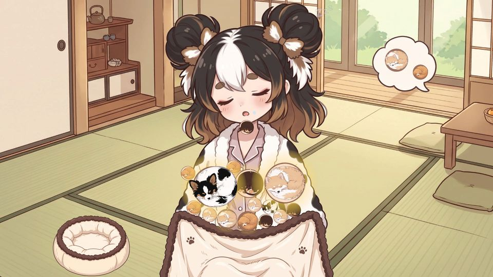
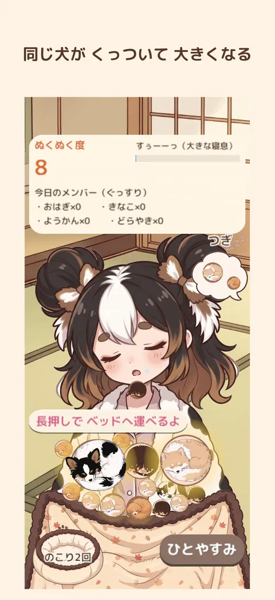
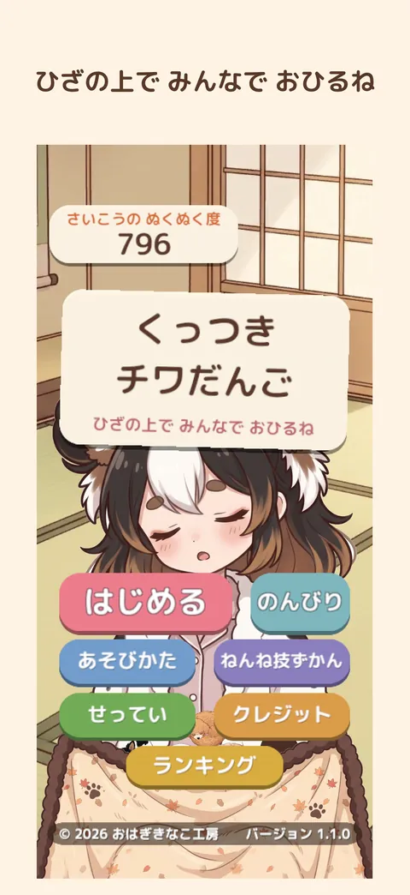
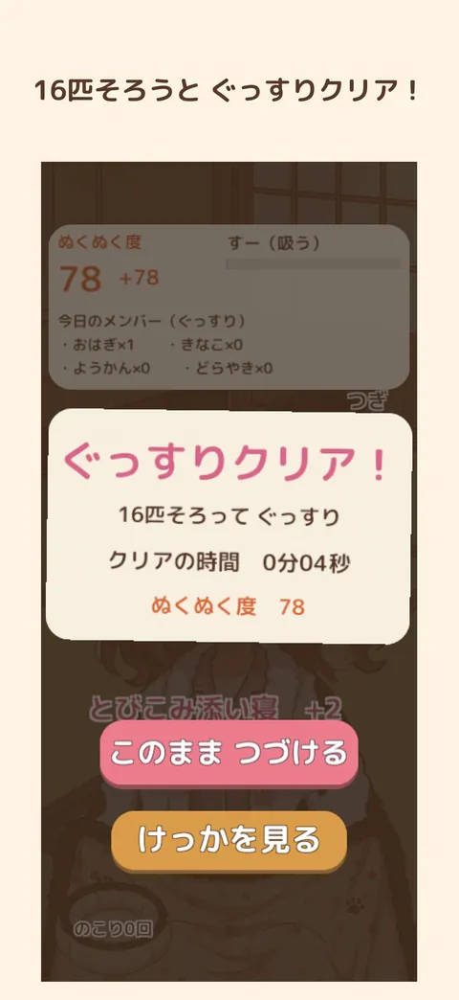
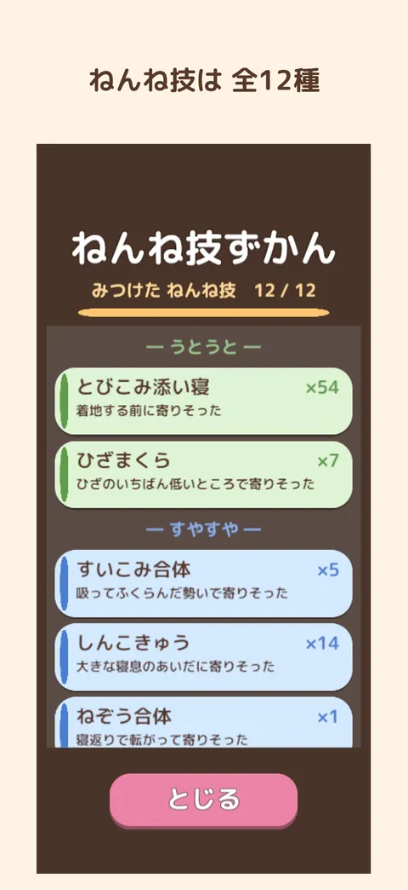
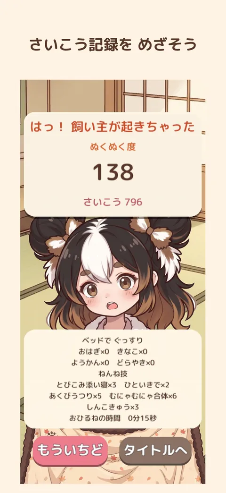

トップ › くっつきチワだんご
くっつきチワだんご
チワワたちがお昼寝する 犬の落ちものパズル
うたた寝している飼い主のひざの上にちいさな犬たちが一匹ずつ「ぴょん」と飛び乗ってきます。
同じ犬どうしがふれると、寄りそってお昼寝。2 匹、4 匹、8 匹……8 匹のだんごどうしが寄りそって 16 匹そろうと「ぐっすりクリア！」。
- 値段買い切り（広告・課金なし）
- 機種iPhone・iPad（縦向き）／PC のブラウザ
- 言語日本語・英語
- 年齢4+

とくちょう
- 1
寄りそって大きくなる
同じ犬で同じ大きさのだんごがふれると、寄りそって大きくなります（1→2→4→8 匹）。16 匹そろえばクリア。
- 2
寝息で動く盤面
飼い主も犬もみんな同じ寝息でふくらんだり縮んだり。吐ききった瞬間に飛び乗ると「ふわっ」とやさしく降ります。
- 3
ねんね技 12 種
寝息や寝返りのおかげで寄りそうと、名前のついた「ねんね技」に。「ねんね技ずかん」に集まります。
- 4
季節のひざ掛け
ひざ掛けの柄が春・夏・秋・冬で変わります。
- 5
のんびりモード
飼い主が起きない「のんびり」モードでゆっくり遊べます。
- 6
広告なし・課金なし
アプリ内課金も広告もありません。インターネットにつながなくても遊べます。
がめん





← 横にスクロールできます →
あそびかた
- 指を置くと、待っている犬がそこへ。指を離すと、ぴょんと飛び乗ります。
- 同じ犬で同じ大きさのだんごがふれると、寄りそって大きくなります。
- 8 匹のだんごどうしが寄りそって 16 匹そろうとクリア。そのまま続けても遊べます。8 匹のだんごは 1 回のおひるねで 2 回まで、長押しでベッドへ運べます。
- 犬が飼い主のあごより上に少しいると、飼い主が「はっ！」と起きちゃっておしまい。
登場する犬たち
1 回のおひるねにはこのうち 4 匹が遊びに来ます。

おはぎ
チワワ×パピヨン
工房のモデル犬。黒い頭に白い線、大きな飾り耳、くるんとした白いしっぽ。

しらたま
チワワ×マルチーズ
まっしろでふわふわ。

きなこ
チワワ×ポメラニアン
白とクリームにきなこ色の毛。

ようかん
チワワ×ダックスフンド
こげ茶にタン。たれ耳で胴が長い。

どらやき
チワワ×トイプードル
アプリコット色の巻き毛。
よくある質問
値段はいくらですか？
App Store 版は買い切りです。今の値段は App Store のページで確かめてください（期間限定で無料や割引にすることがあります）。
ブラウザ版（unityroom・itch.io）は無料です。
広告や課金はありますか？
どちらもありません。
インターネットにつながなくても遊べますか？
はい。Game Center にサインインしているときだけ、ランキングと実績のためにスコアを送ります。
むずかしくないですか？
飼い主が起きない「のんびり」モードがあります（このモードでは記録とランキングは残りません）。タイトルとひとやすみ画面の「あそびかた」でいつでもルールを見られます。
記録はどこに残りますか？
端末の中に自動でセーブされます（さいこうのぬくぬく度・いちばん早いクリア・ねんね技ずかん）。アプリを消すと消えます。
AI は使っていますか？
犬の 3D モデル（2D の絵にして使用）は Meshy、飼い主・ひざ掛け・部屋・小物のイラストは Google Gemini で作り、作者が選んで調整しました。プログラムと画面の文章は Claude Code を使って書き、作者が確認しています。遊んでいる間に AI が何かを作ることはありません。音楽・効果音は人が作った素材です。
プライバシーについて（かんたんな説明）
- 名前や連絡先などの個人情報は集めません。アカウント登録もありません。
- 広告・アクセス解析はありません。
- 記録は端末の中だけに保存され、アプリを消すと消えます。
ほかの作品
-

チワちくRUN
ちくわを集めながら障害物をよけてゴールへ。犬たちが駆けぬける 3D ランゲーム。
無料・広告なし・課金なしiPhone・iPad／PC -

あみあみチワおさんぽ
三つ編みみたいにからまった犬たちのリードを入れかわりと持ちかえでほどくパズル。
無料（広告あり・広告の削除あり）iPhone・iPad／PC のブラウザ -

じりじりチワまて
「待て」のあいだにじりじり前に出る犬たち。「よし！」の瞬間、ぬけがけしたのはだれ？
無料（広告あり・広告の削除あり）iPhone・iPad -

チワ判子課長
チワワのおはぎ課長が、しっぽの先にぶら下げた判子で書類に判を押す。審査はきびしいねこ課長。
無料・広告なしPC のブラウザ（unityroom）